One traced query flows through three nested spans (retrieval → context_assembly → generation) inside one parent span, with Prometheus counters firing at specific, deliberate points — including the fallback path when retrieval finds nothing relevant.

| Node | Location | What it does |
|---|---|---|
| ANYSCORE / FALLBACK | traced_pipeline.py:retrieve() | A query with zero keyword overlap against the whole corpus still returns something — the fallback picks the single highest-scoring entry (even at score=0) rather than returning nothing to downstream context assembly. |
| EMPTYCTX | traced_pipeline.py:assemble_context() | An empty chunk list produces an empty string context, not an exception — "\n\n---\n\n".join([]) is just "". |
| EXCEPT / SPANERR | traced_pipeline.py:run_traced_query() | The whole pipeline is wrapped in try/except specifically to set span.set_status(Status.ERROR, str(e)) AND increment the outcome='error' counter before re-raising — the exception still propagates, but not before telemetry captures it. |
| FINALLY | traced_pipeline.py:run_traced_query() | Runs regardless of success or failure — this is what guarantees REQUEST_LATENCY gets an observation and the parent span gets its final total_latency_sec attribute even when something upstream raised. |
All three child spans open and close normally inside the parent span; the parent's status is set to OK and the success counter increments.
SPAN1 → RETRIEVEFN → ASSEMBLEFN → GENFN → EXCEPT(No) → SPANOK → FINALLY → RETURNRESULTRetrieval still returns exactly one chunk (the fallback), so context assembly and generation proceed normally rather than failing on empty input.
RETRIEVEFN → KEYWORDMATCH → ANYSCORE(No) → FALLBACK(1 entry) → SPANATTR1 → ASSEMBLEFNThe exception is caught, the span is marked ERROR, the error counter increments — proven directly by forcing a real exception and checking the metric moved, not just trusting the try/except by inspection.
GENFN → LLMINVOKE(raises) → EXCEPT(Yes) → SPANERR → FINALLY → exception re-raisedIt guarantees that every invocation — success or failure — records latency (the finally block always runs) and that any exception sets the span status to ERROR with the exception message attached before re-raising, so a trace query for 'all failed requests in the last hour' will reliably find every failure with its associated span-level context. It does not guarantee the span/metric data survives a hard process crash (a SIGKILL mid-request loses whatever hasn't been flushed to the exporter yet) or that concurrent requests don't have interleaved span timing issues if the tracing SDK's context propagation is misconfigured — those require the exporter's own durability guarantees and correct async-context handling, which are outside what try/except/finally alone can provide.
I'd move from 100%-sampled tracing to tail-based sampling: buffer spans briefly and only permanently keep traces that are 'interesting' — errors, high latency outliers, or a random baseline percentage of normal traffic for statistical visibility — rather than head-based sampling (deciding to sample at request start, before you know if it'll be interesting). The trade-off: tail sampling needs a collector layer that can buffer and make the keep/drop decision after the fact (e.g. the OpenTelemetry Collector's tail-sampling processor), adding infrastructure complexity and a small amount of end-to-end latency for that buffering decision, versus head sampling's simplicity but risk of dropping exactly the rare-but-important error traces you most want to keep.
It's a deliberate trade-off, not a free lunch — the fallback prevents the pipeline from crashing on an edge case (zero keyword overlap), but you're right that on its own it risks generation producing a confident-sounding answer from irrelevant context. The actual mitigation is layered: this fallback keeps the pipeline resilient, while a separate groundedness/refusal check (the pattern project 01 implements explicitly) is what should prevent the final answer from claiming confidence it doesn't have — observability's job here is to make the fallback visible (a specific span attribute or counter incrementing on 'fallback used') so you can measure how often it fires and correlate it with downstream answer-quality metrics, not to prevent the fallback from ever happening.
Crashes and latency spikes show up in error rates and histograms directly, but silent quality regressions need a different signal: I'd add span attributes capturing retrieval confidence scores (was the fallback used, what was the top similarity score) and track their distribution over time — a rising rate of low-confidence retrievals or fallback usage is a leading indicator that the corpus or query distribution has drifted even before generation quality visibly degrades. Combined with periodic offline evaluation (project 22's Ragas/DeepEval pattern) sampling real production traffic, that gives you both a fast, cheap online proxy signal and a slower, more accurate ground-truth check, rather than relying on user complaints as your first quality signal.
Nested spans let you see exactly where time is spent within a single request — is a slow response due to retrieval (vector search), context assembly (string concatenation, usually fast), or generation (the LLM call, usually the dominant cost) — which is essential for debugging latency without guessing. A flat span would only tell you total pipeline latency and success/failure, forcing you to either add ad-hoc logging to localize a slow stage or reproduce the issue locally with a profiler — nested spans turn 'why was this request slow' from a debugging session into a single trace-viewer query, which is the entire point of structured tracing over plain logging.